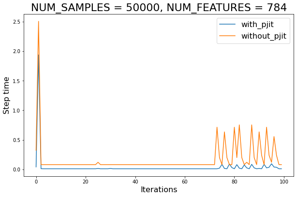
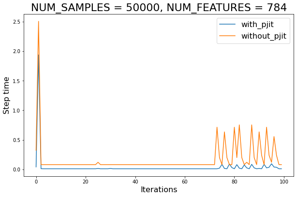

# Copyright 2022 Google LLC.
#
# Licensed under the Apache License, Version 2.0 (the "License");
# you may not use this file except in compliance with the License.
# You may obtain a copy of the License at
#
# https://www.apache.org/licenses/LICENSE-2.0
#
# Unless required by applicable law or agreed to in writing, software
# distributed under the License is distributed on an "AS IS" BASIS,
# WITHOUT WARRANTIES OR CONDITIONS OF ANY KIND, either express or implied.
# See the License for the specific language governing permissions and
# limitations under the License.
jax.experimental.pjit example using JAXopt.
The purpose of this example is to illustrate how JAXopt solvers can be easily
used for distributed training thanks to jax.experimental.pjit. In this case, we begin by
implementing data parallel training of a multi-class logistic regression model
on synthetic data.
NOTE: jax.experimental.pjit is not yet supported on Google Colab. Please connect to Google Cloud TPUs to execute the example.
#@markdown The number of optimization steps to perform:
MAXITER = 100 #@param{type:"integer"}
#@markdown The number of samples in the (synthetic) dataset:
NUM_SAMPLES = 50000 #@param{type:"integer"}
#@markdown The number of features in the (synthetic) dataset:
NUM_FEATURES = 784 #@param{type:"integer"}
#@markdown The number of classes in the (synthetic) dataset:
NUM_CLASSES = 10 #@param{type:"integer"}
#@markdown The stepsize for the optimizer (set to 0.0 to use line search):
STEPSIZE = 0.0 #@param{type:"number"}
#@markdown The line search approach (either `'zoom'` or `backtracking`), ignored if `STEPSIZE > 0.0`:
LINESEARCH = 'zoom' #@param{type:"string"}
Imports and TPU setup
%%capture
%pip install jaxopt
import time
from typing import Any, Callable, Tuple, Union
# activate TPUs if available
try:
import jax.tools.colab_tpu
jax.tools.colab_tpu.setup_tpu()
except (KeyError, RuntimeError):
print("TPU not found, continuing without it.")
import jax
import jax.numpy as jnp
import jaxopt
import matplotlib.pyplot as plt
import numpy as np
from sklearn import datasets
jax.local_devices()
[TpuDevice(id=0, process_index=0, coords=(0,0,0), core_on_chip=0),
TpuDevice(id=1, process_index=0, coords=(0,0,0), core_on_chip=1),
TpuDevice(id=2, process_index=0, coords=(1,0,0), core_on_chip=0),
TpuDevice(id=3, process_index=0, coords=(1,0,0), core_on_chip=1),
TpuDevice(id=4, process_index=0, coords=(0,1,0), core_on_chip=0),
TpuDevice(id=5, process_index=0, coords=(0,1,0), core_on_chip=1),
TpuDevice(id=6, process_index=0, coords=(1,1,0), core_on_chip=0),
TpuDevice(id=7, process_index=0, coords=(1,1,0), core_on_chip=1)]
Type aliases
Array = Union[np.ndarray, jax.Array]
Auxiliary functions
A minimal working example of how to create a Mesh for data parallel execution using pjit. Please note that, as opposed to pmap, pjit allows to seemlessly combine data and model parallel execution as well.
from jax.sharding import Mesh
from jax.sharding import PartitionSpec
from jax.experimental.pjit import pjit
def setup_data_parallel_mesh():
global_mesh = Mesh(np.asarray(jax.devices(), dtype=object), ['data'])
jax.experimental.maps.thread_resources.env = (
jax.experimental.maps.ResourceEnv(physical_mesh=global_mesh, loops=()))
setup_data_parallel_mesh()
Custom-loop
The following code uses data-parallelism in the train loop. Through the use_pjit keyword argument we can deactivate this parallelism. We’ll use this feature later to benchmark the impact of parallelism.
def fit(
data: Tuple[Array, Array],
init_params: Array,
stepsize: float = 0.0,
linesearch: str = 'zoom',
use_pjit: bool = False,
) -> Tuple[np.ndarray, np.ndarray, float]:
"""Fits a multi-class logistic regression model for demonstration purposes.
Args:
data: A tuple `(X, y)` with the training covariates and categorical labels,
respectively.
init_params: The initial value of the model's weights.
stepsize: The stepsize to use for the solver. If set to `0`, linesearch will
be used instead.
linesearch: The linesearch algorithm to use. If `stepsize > 0`, linsearch
will be disabled.
use_pjit: Whether to distribute the computation across replicas or use only
the first device available.
Returns:
The per-step errors and runtimes, as well as the JIT-compile time for the
solver's `update` function.
"""
# When using `pjit` to distribute the computation across devices, it is not
# necessary to override the `value_and_grad` of `fun` (though it is supported
# if desired for other reasons, e.g. gradient clipping).
solver = jaxopt.LBFGS(fun=jaxopt.objective.multiclass_logreg,
stepsize=stepsize,
linesearch=linesearch)
# Apply the `jax.pmap` transform to the function to be computed in a
# distributed manner (the solver's `update` method in this case). Otherwise,
# we JIT compile it.
if use_pjit:
update = pjit(
solver.update,
in_axis_resources=(None, None, PartitionSpec('data')),
out_axis_resources=None)
else:
update = jax.jit(solver.update)
# Initialize solver state.
state = solver.init_state(init_params, data=data)
params = init_params
# When using `pjit` for data-parallel training, we do not need to explicitly
# replicate model parameters across devices. Instead, replication is specified
# via the `in_axes_resources` argument of the `pjit` transformation.
# Finally, since in this demo we are *not* using mini-batches, it pays off to
# transfer data to the device beforehand. Otherwise, host-to-device transfers
# occur in each update. This is true regardless of whether we use distributed
# or single-device computation.
if use_pjit: # Shards data and moves it to device,
data = pjit(
lambda X, y: (X, y),
in_axis_resources=PartitionSpec('data'),
out_axis_resources=PartitionSpec('data'))(*data)
else: # Just move data to device.
data = jax.tree_map(jax.device_put, data)
# Pre-compiles update, preventing it from affecting step times.
tic = time.time()
_ = update(params, state, data)
compile_time = time.time() - tic
outer_tic = time.time()
step_times = np.zeros(MAXITER)
errors = np.zeros(MAXITER)
for it in range(MAXITER):
tic = time.time()
params, state = update(params, state, data)
jax.tree_map(lambda t: t.block_until_ready(), (params, state))
step_times[it] = time.time() - tic
errors[it] = state.error.item()
print(
f'Total time elapsed with {linesearch} linesearch and pjit = {use_pjit}:',
round(time.time() - outer_tic, 2), 'seconds.')
return errors, step_times, compile_time
Boilerplate
Creates dataset, calls fit with and without jax.pjit, makes figures.
def run():
"""Boilerplate to run the demo experiment."""
data = datasets.make_classification(n_samples=NUM_SAMPLES,
n_features=NUM_FEATURES,
n_classes=NUM_CLASSES,
n_informative=50,
random_state=0)
init_params = jnp.zeros([NUM_FEATURES, NUM_CLASSES])
errors, step_times, compile_time = {}, {}, {}
for use_pjit in (True, False):
exp_name: str = f"{'with' if use_pjit else 'without'}_pjit"
_errors, _step_times, _compile_time = fit(data=data,
init_params=init_params,
stepsize=STEPSIZE,
linesearch=LINESEARCH,
use_pjit=use_pjit)
errors[exp_name] = _errors
step_times[exp_name] = _step_times
compile_time[exp_name] = _compile_time
plt.figure(figsize=(10, 6.18))
for use_pjit in (True, False):
exp_name: str = f"{'with' if use_pjit else 'without'}_pjit"
plt.plot(jnp.arange(MAXITER), errors[exp_name], label=exp_name)
plt.xlabel('Iterations', fontsize=16)
plt.ylabel('Gradient error', fontsize=16)
plt.yscale('log')
plt.legend(loc='best', fontsize=16)
plt.title(f'NUM_SAMPLES = {NUM_SAMPLES}, NUM_FEATURES = {NUM_FEATURES}',
fontsize=22)
plt.figure(figsize=(10, 6.18))
for use_pjit in (True, False):
exp_name: str = f"{'with' if use_pjit else 'without'}_pjit"
plt.plot(jnp.arange(MAXITER), step_times[exp_name], label=exp_name)
plt.xlabel('Iterations', fontsize=16)
plt.ylabel('Step time', fontsize=16)
plt.legend(loc='best', fontsize=16)
plt.title(f'NUM_SAMPLES = {NUM_SAMPLES}, NUM_FEATURES = {NUM_FEATURES}',
fontsize=22)
return errors, step_times, compile_time
Main
print("num_samples:", NUM_SAMPLES)
print("num_features:", NUM_FEATURES)
print("num_features:", NUM_CLASSES)
print("maxiter:", MAXITER)
print("stepsize:", STEPSIZE)
print("linesearch (ignored if `stepsize` > 0):", LINESEARCH)
print()
errors, step_times, compile_time = run()
print('Average speed-up (ignoring compile):',
round((step_times['without_pjit'] / step_times['with_pjit']).mean(), 2))
num_samples: 50000
num_features: 784
num_features: 10
maxiter: 100
stepsize: 0.0
linesearch (ignored if `stepsize` > 0): zoom
Total time elapsed with zoom linesearch and pjit = True: 3.79 seconds.
Total time elapsed with zoom linesearch and pjit = False: 16.8 seconds.
Average speed-up (ignoring compile): 9.57
 
